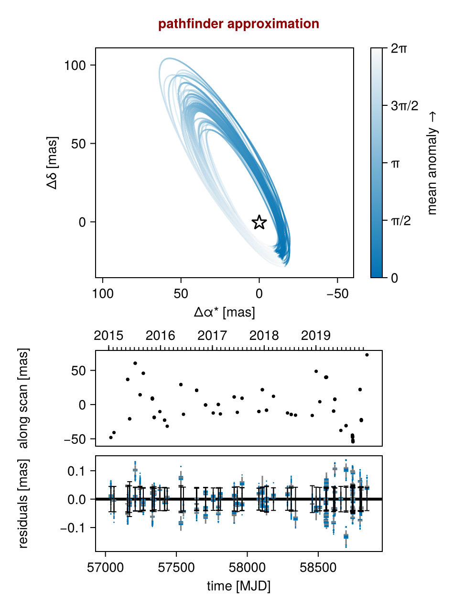
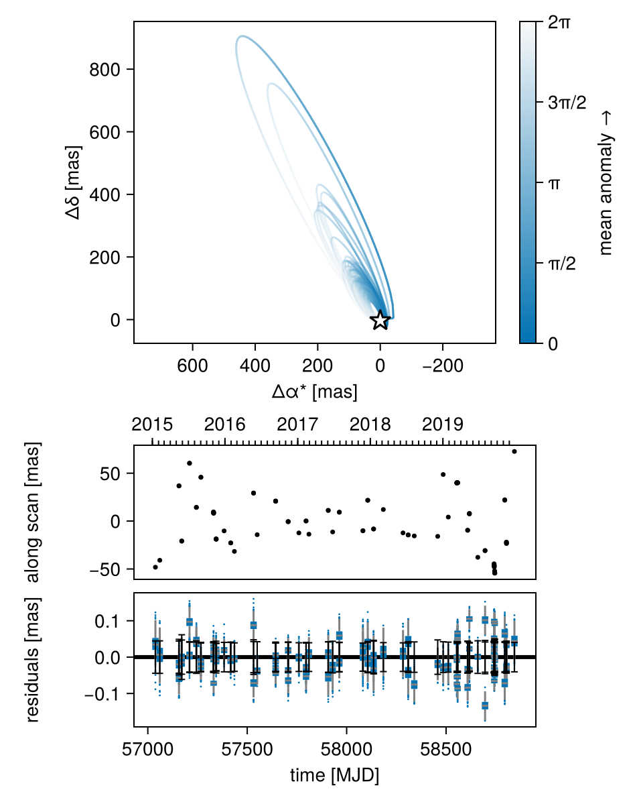
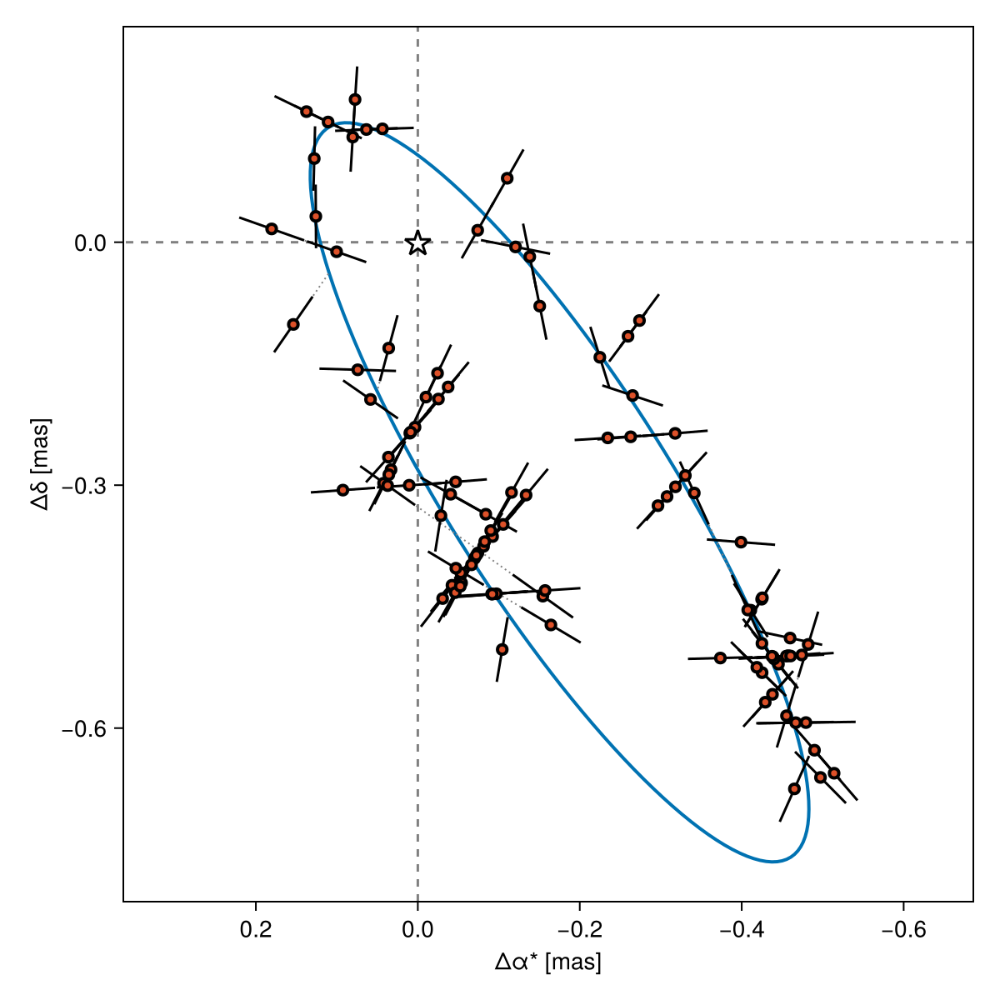
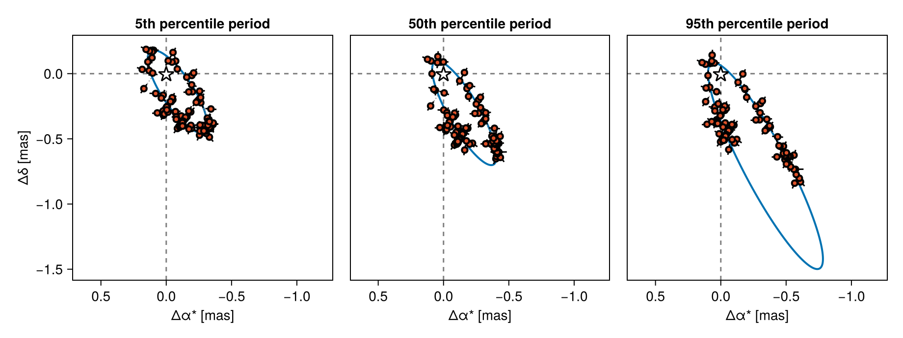
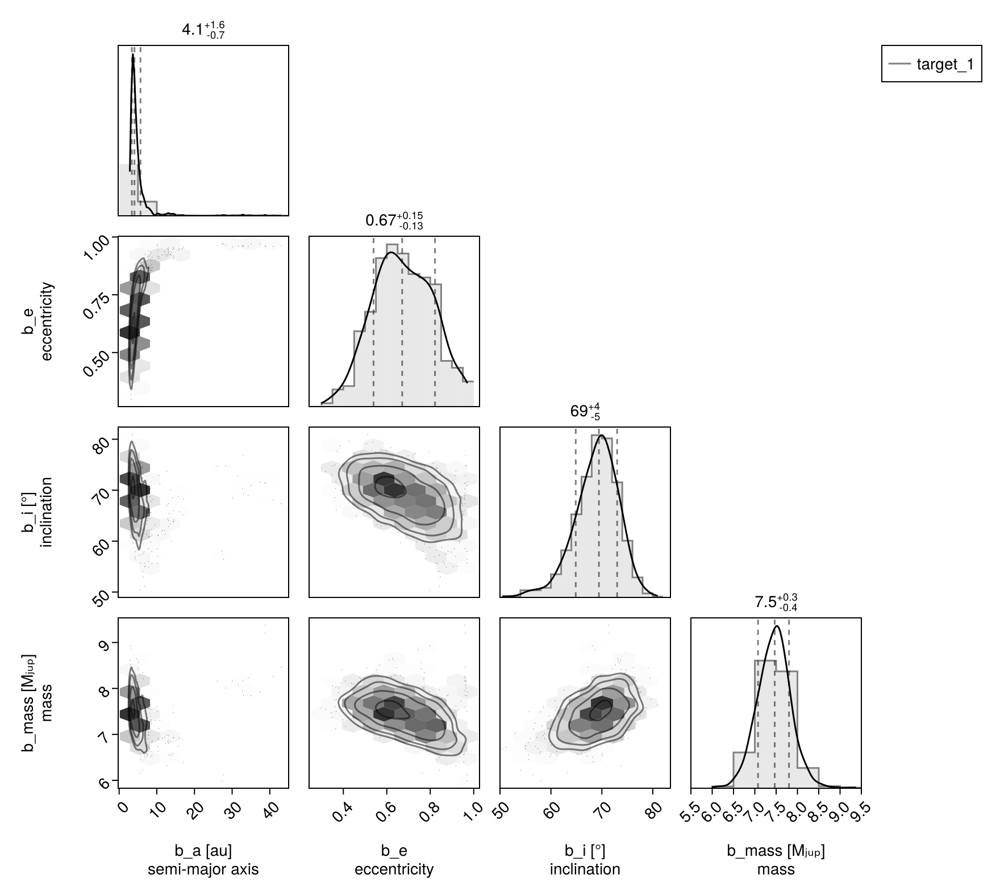

Fitting Gaia DR4 IAD
This tutorial shows how you can use Octofitter to fit preliminary RV and absolute astrometry data from DR4, using various already published data, including:
- Gaia-BH3 black hole (the only real DR4 data released so far)
- Data from https://dace.unige.ch/openData/?record=10.82180/dace-gaia-ohp
The final format of the Gaia IAD data may change, in which case this tutorial will be updated.
using CairoMakie
using Octofitter
using Distributions
using CSV, DataFramesOHP Gaia Splinter Session
Download and plot the data:
fname = download("https://dace.unige.ch/downloads/open_data/dace-gaia-ohp/files/target_1.csv")
df = CSV.read(fname, DataFrame);| Row | obs_time_tcb | centroid_pos_al | centroid_pos_error_al | parallax_factor_al | scan_pos_angle | field_of_view |
|---|---|---|---|---|---|---|
| Float64 | Float64 | Float64 | Float64 | Float64 | Int64 | |
| 1 | 2.45704e6 | -48.1529 | 0.044486 | 0.694068 | 2.72271 | 2 |
| 2 | 2.45706e6 | -40.9114 | 0.0447412 | -0.583294 | -2.36159 | 2 |
| 3 | 2.45716e6 | 36.8968 | 0.0441832 | 0.36178 | 0.710367 | 1 |
| 4 | 2.45716e6 | 36.6379 | 0.0488587 | 0.358281 | 0.714199 | 2 |
| 5 | 2.45717e6 | -20.7433 | 0.061433 | -0.522976 | 1.5846 | 1 |
| 6 | 2.45717e6 | -20.9825 | 0.0470352 | -0.526464 | 1.58803 | 2 |
| 7 | 2.45721e6 | 60.4545 | 0.0409268 | 0.7256 | -0.294868 | 1 |
| 8 | 2.45721e6 | 60.3531 | 0.0423611 | 0.725443 | -0.295416 | 2 |
| 9 | 2.45724e6 | 14.2189 | 0.0413549 | -0.611316 | 0.797734 | 1 |
| 10 | 2.45724e6 | 14.3917 | 0.0447546 | -0.609065 | 0.794002 | 2 |
| 11 | 2.45727e6 | 45.7711 | 0.0384871 | 0.385425 | -0.726784 | 1 |
| 12 | 2.45727e6 | 45.7168 | 0.0406302 | 0.387544 | -0.731293 | 2 |
| 13 | 2.45733e6 | 9.56681 | 0.0398049 | -0.162231 | -1.49614 | 2 |
| 14 | 2.45733e6 | 9.15272 | 0.0394856 | -0.156233 | -1.50874 | 1 |
| 15 | 2.45733e6 | 9.0219 | 0.0425311 | -0.153719 | -1.514 | 2 |
| 16 | 2.45733e6 | 8.60603 | 0.0402893 | -0.147658 | -1.52661 | 1 |
| 17 | 2.45733e6 | 8.43312 | 0.0416049 | -0.145114 | -1.5319 | 2 |
| 18 | 2.45733e6 | 8.11853 | 0.0400409 | -0.138987 | -1.54454 | 1 |
| 19 | 2.45734e6 | -18.5428 | 0.0384698 | 0.366822 | -2.45997 | 1 |
| 20 | 2.45734e6 | -18.6472 | 0.0436691 | 0.369776 | -2.46517 | 2 |
| 21 | 2.45734e6 | -18.91 | 0.0374483 | 0.376832 | -2.4776 | 1 |
| 22 | 2.45734e6 | -19.0 | 0.0383548 | 0.379764 | -2.48277 | 2 |
| 23 | 2.45738e6 | -10.2617 | 0.0404848 | -0.685462 | -1.7787 | 2 |
| 24 | 2.45742e6 | -22.7646 | 0.0402788 | 0.647445 | 2.59671 | 1 |
| 25 | 2.45742e6 | -22.8093 | 0.0412497 | 0.64541 | 2.59843 | 2 |
| 26 | 2.45744e6 | -31.651 | 0.0390913 | -0.499 | -2.57765 | 1 |
| 27 | 2.45753e6 | 29.3685 | 0.0476012 | 0.482105 | 0.427209 | 1 |
| 28 | 2.45753e6 | 29.1126 | 0.0427122 | 0.479404 | 0.430184 | 2 |
| 29 | 2.45755e6 | -14.2115 | 0.0422602 | -0.636331 | 1.49303 | 1 |
| 30 | 2.45764e6 | 20.9087 | 0.0392156 | 0.211487 | -0.720942 | 1 |
| 31 | 2.45764e6 | 20.8808 | 0.0412828 | 0.213899 | -0.725945 | 2 |
| 32 | 2.45764e6 | 20.882 | 0.038601 | 0.219666 | -0.737922 | 1 |
| 33 | 2.45764e6 | 20.8178 | 0.0391126 | 0.222047 | -0.742913 | 2 |
| 34 | 2.45771e6 | -0.579278 | 0.0402944 | -0.334369 | -1.48939 | 1 |
| 35 | 2.45771e6 | -0.560858 | 0.0413627 | -0.332083 | -1.49425 | 2 |
| 36 | 2.45771e6 | -0.619925 | 0.0410127 | -0.326537 | -1.50593 | 1 |
| 37 | 2.45776e6 | -12.3413 | 0.0394515 | -0.702371 | -1.89185 | 1 |
| 38 | 2.4578e6 | 0.14443 | 0.0386047 | 0.550348 | 2.50035 | 1 |
| 39 | 2.4578e6 | 0.108146 | 0.0404562 | 0.547076 | 2.50359 | 2 |
| 40 | 2.45781e6 | -13.701 | 0.0394229 | -0.393997 | -2.83903 | 1 |
| 41 | 2.45791e6 | 11.2121 | 0.0422705 | 0.576794 | 0.197661 | 1 |
| 42 | 2.45791e6 | 11.1113 | 0.0416816 | 0.574787 | 0.199797 | 2 |
| 43 | 2.45793e6 | -11.3523 | 0.0435312 | -0.701976 | 1.37648 | 1 |
| 44 | 2.45796e6 | 9.24178 | 0.0408407 | 0.675424 | -0.514505 | 1 |
| 45 | 2.45796e6 | 9.32633 | 0.0398408 | 0.676314 | -0.516821 | 2 |
| 46 | 2.45808e6 | -10.201 | 0.0386409 | -0.470068 | -1.52885 | 2 |
| 47 | 2.45808e6 | -10.0523 | 0.0386744 | -0.465317 | -1.53915 | 1 |
| 48 | 2.45811e6 | 21.6837 | 0.0428973 | 0.658437 | 3.08022 | 1 |
| 49 | 2.45811e6 | 21.7672 | 0.0409237 | 0.660069 | 3.07724 | 2 |
| 50 | 2.45814e6 | -8.26069 | 0.0462075 | -0.690594 | -2.02298 | 2 |
| 51 | 2.45814e6 | -8.25136 | 0.0438904 | -0.69192 | -2.02286 | 1 |
| 52 | 2.45819e6 | 12.0758 | 0.0398059 | -0.258633 | 3.11685 | 1 |
| 53 | 2.45828e6 | -12.3236 | 0.0393062 | 0.648678 | 0.00685001 | 1 |
| 54 | 2.45831e6 | -14.4016 | 0.0388097 | -0.721012 | 1.23275 | 1 |
| 55 | 2.45831e6 | -14.5083 | 0.0425136 | -0.720948 | 1.23187 | 2 |
| 56 | 2.45834e6 | -15.5082 | 0.0418119 | 0.605761 | -0.605133 | 2 |
| 57 | 2.45846e6 | -15.9306 | 0.0473074 | -0.571459 | -1.60087 | 1 |
| 58 | 2.45849e6 | 48.6381 | 0.0421275 | 0.704007 | 2.87902 | 2 |
| 59 | 2.45851e6 | 4.18767 | 0.0412017 | -0.653544 | -2.17716 | 1 |
| 60 | 2.45855e6 | 39.7495 | 0.0391015 | 0.198209 | 2.40754 | 1 |
| 61 | 2.45855e6 | 39.743 | 0.0416165 | 0.19324 | 2.41283 | 2 |
| 62 | 2.45855e6 | 39.8671 | 0.0416252 | 0.181402 | 2.42542 | 1 |
| 63 | 2.45855e6 | 39.8888 | 0.0422522 | 0.17639 | 2.43075 | 2 |
| 64 | 2.45856e6 | 40.0088 | 0.0397743 | 0.164453 | 2.44343 | 1 |
| 65 | 2.45856e6 | 40.0543 | 0.0399822 | 0.159405 | 2.4488 | 2 |
| 66 | 2.45856e6 | 40.0578 | 0.038564 | -0.0467706 | 2.66808 | 2 |
| 67 | 2.45856e6 | 40.0299 | 0.0391784 | -0.0585495 | 2.68073 | 1 |
| 68 | 2.45856e6 | 40.0016 | 0.0406641 | -0.0634895 | 2.68605 | 2 |
| 69 | 2.45856e6 | 40.0853 | 0.0390275 | -0.0751554 | 2.69862 | 1 |
| 70 | 2.45856e6 | 40.0276 | 0.0425006 | -0.0800457 | 2.7039 | 2 |
| 71 | 2.45861e6 | -9.61895 | 0.0441096 | 0.222739 | 1.05677 | 1 |
| 72 | 2.45861e6 | -9.53549 | 0.0425706 | 0.218465 | 1.06143 | 2 |
| 73 | 2.45862e6 | 7.5352 | 0.0399649 | -0.339188 | 1.63729 | 1 |
| 74 | 2.45862e6 | 7.58671 | 0.039719 | -0.343639 | 1.64189 | 2 |
| 75 | 2.45862e6 | 8.03844 | 0.0386886 | -0.354085 | 1.65266 | 1 |
| 76 | 2.45866e6 | -37.8171 | 0.0448004 | 0.700023 | -0.157241 | 2 |
| 77 | 2.4587e6 | -30.719 | 0.045771 | -0.660658 | 0.95139 | 1 |
| 78 | 2.4587e6 | -30.926 | 0.0415823 | -0.661863 | 0.952435 | 2 |
| 79 | 2.45874e6 | -44.5928 | 0.04259 | 0.175736 | -0.741707 | 2 |
| 80 | 2.45874e6 | -45.1518 | 0.0427016 | 0.164101 | -0.729406 | 1 |
| 81 | 2.45874e6 | -45.3946 | 0.0407683 | 0.159178 | -0.724196 | 2 |
| 82 | 2.45874e6 | -45.8403 | 0.040092 | 0.147459 | -0.711813 | 1 |
| 83 | 2.45874e6 | -46.1034 | 0.0452514 | 0.142502 | -0.706572 | 2 |
| 84 | 2.45874e6 | -46.7037 | 0.0420644 | 0.130705 | -0.694108 | 1 |
| 85 | 2.45874e6 | -47.2859 | 0.0419236 | 0.113871 | -0.676321 | 1 |
| 86 | 2.45874e6 | -47.9796 | 0.0439484 | 0.0969722 | -0.658466 | 1 |
| 87 | 2.45874e6 | -52.0314 | 0.0416362 | -0.00462816 | -0.550782 | 1 |
| 88 | 2.45874e6 | -52.6071 | 0.0398871 | -0.0214017 | -0.532899 | 1 |
| 89 | 2.45874e6 | -52.8213 | 0.0504025 | -0.0263593 | -0.527601 | 2 |
| 90 | 2.45874e6 | -53.1394 | 0.0421439 | -0.0380742 | -0.51508 | 1 |
| 91 | 2.45875e6 | -53.45 | 0.0421634 | -0.0429994 | -0.5098 | 2 |
| 92 | 2.45875e6 | -53.7534 | 0.0425215 | -0.0546253 | -0.497341 | 1 |
| 93 | 2.45875e6 | -53.8775 | 0.0477058 | -0.0595122 | -0.49209 | 2 |
| 94 | 2.45875e6 | -54.2517 | 0.0402847 | -0.0710438 | -0.479686 | 1 |
| 95 | 2.45875e6 | -54.4383 | 0.0396843 | -0.0758834 | -0.474467 | 2 |
| 96 | 2.4588e6 | 22.2437 | 0.0402266 | 0.221921 | -2.11177 | 1 |
| 97 | 2.4588e6 | 21.7735 | 0.0427625 | 0.217548 | -2.10699 | 2 |
| 98 | 2.4588e6 | -21.9258 | 0.0437775 | -0.356837 | -1.50987 | 1 |
| 99 | 2.4588e6 | -22.335 | 0.043784 | -0.361362 | -1.50514 | 2 |
| 100 | 2.4588e6 | -23.0782 | 0.0395257 | -0.371978 | -1.49402 | 1 |
| 101 | 2.4588e6 | -23.4085 | 0.0416431 | -0.376407 | -1.48937 | 2 |
| 102 | 2.45884e6 | 72.6996 | 0.0404941 | 0.685968 | 2.9744 | 1 |
We can now construct a likelihood object for this data. We must also supply the Gaia ID, which will be used to query the full Gaia solution for this object (for now, using DR3):
ref_epoch_mjd = 57936.375
gaia_dr4_obs = GaiaDR4AstromObs(
df,
# For plotting reasons, you need to supply a Gaia ID to know e.g. the absolute Ra and Dec
# For these ~simulated examples, you can pick one at random
gaia_id=4373465352415301632,
variables=@variables begin
astrometric_jitter ~ LogUniform(0.00001, 10) # mas
ra_offset_mas ~ Normal(0, 10000)
dec_offset_mas ~ Normal(0, 10000)
pmra ~ Uniform(-1000, 1000) # mas/yr
pmdec ~ Uniform(-1000, 1000) # mas/yr
# ra_offset_mas = -0.00154
# dec_offset_mas = 0.0019354
# pmra = 5.421
# pmdec = -24.121
plx = system.plx
ref_epoch = $ref_epoch_mjd
end
)GaiaDR4AstromObs Table with 8 columns and 102 rows:
obs_time_tcb centroid_pos_al centroid_pos_error_… parallax_factor_al ⋯
┌───────────────────────────────────────────────────────────────────────────
1 │ 2.45704e6 -48.1529 0.044486 0.694068 ⋯
2 │ 2.45706e6 -40.9114 0.0447412 -0.583294 ⋯
3 │ 2.45716e6 36.8968 0.0441832 0.36178 ⋯
4 │ 2.45716e6 36.6379 0.0488587 0.358281 ⋯
5 │ 2.45717e6 -20.7433 0.061433 -0.522976 ⋯
6 │ 2.45717e6 -20.9825 0.0470352 -0.526464 ⋯
7 │ 2.45721e6 60.4545 0.0409268 0.7256 ⋯
8 │ 2.45721e6 60.3531 0.0423611 0.725443 ⋯
9 │ 2.45724e6 14.2189 0.0413549 -0.611316 ⋯
10 │ 2.45724e6 14.3917 0.0447546 -0.609065 ⋯
11 │ 2.45727e6 45.7711 0.0384871 0.385425 ⋯
12 │ 2.45727e6 45.7168 0.0406302 0.387544 ⋯
13 │ 2.45733e6 9.56681 0.0398049 -0.162231 ⋯
14 │ 2.45733e6 9.15272 0.0394856 -0.156233 ⋯
15 │ 2.45733e6 9.0219 0.0425311 -0.153719 ⋯
16 │ 2.45733e6 8.60603 0.0402893 -0.147658 ⋯
17 │ 2.45733e6 8.43312 0.0416049 -0.145114 ⋯
⋮ │ ⋮ ⋮ ⋮ ⋮ ⋱mjup2msol = Octofitter.mjup2msol
ref_epoch_mjd = Octofitter.meta_gaia_DR3.ref_epoch_mjd
orbit_ref_epoch = mean(gaia_dr4_obs.table.epoch)
b = Planet(
name="b",
basis=Visual{KepOrbit},
observations=[],
variables=@variables begin
a ~ LogUniform(0.01, 100)
e ~ Uniform(0, 0.99)
ω ~ Uniform(0,2pi)
i ~ Sine()
Ω ~ Uniform(0,2pi)
θ ~ Uniform(0,2pi)
tp = θ_at_epoch_to_tperi(θ, $orbit_ref_epoch; M=system.M, e, a, i, ω, Ω)
mass ~ LogUniform(0.01, 1000)
end
)
sys = System(
name="target_1",
companions=[b],
observations=[gaia_dr4_obs,],
variables=@variables begin
M = 1.0
# Note: keep these physically plausible to prevent numerical errors
plx ~ Uniform(0.01,100) # mas
end
)
model = Octofitter.LogDensityModel(sys, verbosity=4)LogDensityModel for System target_1 of dimension 13 and 102 epochs with fields .ℓπcallback and .∇ℓπcallback
Find a starting point via global optimization and variational approximation, and plot the initial points against the data:
init_chain = initialize!(model)
octoplot(model, init_chain)
Sample using parallel tempering (could also use HMC for these unimodel distributions):
using Pigeons
chain, pt = octofit_pigeons(model, n_rounds=10)(chain = MCMC chain (1024×21×1 Array{Float64, 3}), pt = PT(checkpoint = false, ...))Plot the results:
octoplot(model, chain)
If we pick an individual draw, we can also plot the orbit against the Gaia data more directly. Like RV, this only works with individual draws because the Gaia points are "detrended" in a sense from the values of a particular draw (they move around the plot depending on the draw).
# Picks MAP sample
# gaiastarplot(model, chain)
# Pick specific arbitrary sample
idx = rand(1:size(chain,1)) # pick an integer randomly
Octofitter.gaiastarplot(model, chain, idx)
A good practice is to plot a few different values from the posterior, or e.g. plot draws from 5th, 50th, and 95th percentile in a key orbit parameter like
- semi-major axis
- eccentricity
- inclination
Here, we show semi-major axis/period
fig = Figure(size=(920,345))
percentile_positions = round.(Int, [0.05, 0.50, 0.95] .* size(chain,1))
indices = [partialsortperm(chain["b_a"][:], k) for k in percentile_positions]
# hint! Try `"b_e", "b_a", and "b_i"
ax1 = Octofitter.gaiastarplot!(fig[1,1], model, chain, indices[1])
ax2 = Octofitter.gaiastarplot!(fig[1,2], model, chain, indices[2])
ax3 = Octofitter.gaiastarplot!(fig[1,3], model, chain, indices[3])
ax1.title = "5th percentile period"
ax2.title = "50th percentile period"
ax3.title = "95th percentile period"
hideydecorations!(ax2)
hideydecorations!(ax3)
linkaxes!(ax1,ax2,ax3)
fig
We can also plot a sky track, reconstructed against the official gaia solution (queried automatically when constructing the observation object).
# specific sample
idx = 42
# optional parameter keplerian_mult: exagerates the keplerian component for visualization
Octofitter.skytrackplot(model, chain, idx, keplerian_mult=10) And of course, you can make a corner plot as usual:
using PairPlots
octocorner(model, chain, small=true)
Cross-validation
You can use the full suite of tools for construting models that subset different amounts of data in different ways. See "Cross Validataion".
The most powerful is exhaustive leave-one-out cross validataion plus calculation of expected log pointwise density (ELPD) to score the fit.
likelihood_mat, epochs = Octofitter.pointwise_like(model, chain)
# `likelihood_mat` is now a N_sample x N_data matrix.
using ParetoSmooth
result = psis_loo(
collect(likelihood_mat'),
chain_index=ones(Int,size(chain,1))
)Simulate data from a posterior draw, and re-fit with or without noise
Optional consistency checks–-could be used in a loop as part of e.g. simulation based calibration.
template = Octofitter.mcmcchain2result(model,chain,1)
sim_system = Octofitter.generate_from_params(model.system, template; add_noise=true)
sim_model = Octofitter.LogDensityModel(sim_system)
# Optional initialization speed up hack:
sim_model.starting_points = model.starting_points;
# then re-fit...
sim_chain, pt = octofit_pigeons(sim_model, n_rounds=5)
Octofitter.gaiastarplot(sim_model, sim_chain)Gaia BH 3
The following tutorial reproduces the fit to Gaia BH3. This one can take longer to run since the orbit is ultra well constrained. For that reason, we don't run it automatically when building the docs. Please go ahead and run the code on your own computer; ETA=approx 20 minutes.
As a first step, we will load the astrometry data for Gaia-BH3 and plot it:
headers = [
:transit_id
:ccd_id
:obs_time_tcb
:centroid_pos_al
:centroid_pos_error_al
:parallax_factor_al
:scan_pos_angle
:outlier_flag
]
df = CSV.read(joinpath(@__DIR__, "astrom.dat"), DataFrame, skipto=7, header=headers, delim=' ', ignorerepeated=true)
df.epoch = jd2mjd.(df.obs_time_tcb)
scatter(
df.obs_time_tcb,
df.centroid_pos_al,
)We can now construct a likelihood object for this data. We must also supply the Gaia ID, which will be used to query the full Gaia solution for this object (for now, using DR3):
ref_epoch_mjd = 57936.375
gaia_bh3_astrom_obs = GaiaDR4Astrom(
df,
gaia_id=4373465352415301632,
variables=@variables begin
astrometric_jitter ~ LogUniform(0.00001, 10) # mas
ra_offset_mas ~ Normal(0, 10000)
dec_offset_mas ~ Normal(0, 10000)
pmra ~ Uniform(-1000, 1000) # mas/yr
pmdec ~ Uniform(-1000, 1000) # mas/yr
# ra_offset_mas = -0.00154
# dec_offset_mas = 0.0019354
# pmra = 5.421
# pmdec = -24.121
plx = system.plx
ref_epoch = $ref_epoch_mjd
end
)This object also has published RV data from Gaia, which we can load and use as normal:
using CSV, DataFrames
using OctofitterRadialVelocity
headers_rv = [
:transit_id,
:obs_time_tcb,
:radial_velocity_kms,
:radial_velocity_err_kms,
]
dfrv = CSV.read(joinpath(@__DIR__, "epochrv.dat"), DataFrame, skipto=7, header=headers_rv, delim=' ', ignorerepeated=true)
dfrv.epoch = jd2mjd.(dfrv.obs_time_tcb)
dfrv.rv = dfrv.radial_velocity_kms * 1e3
dfrv.σ_rv = dfrv.radial_velocity_err_kms * 1e3
# Calculate mean RV for the prior
mean_rv = mean(dfrv.rv)
rvlike = StarAbsoluteRVObs(
dfrv,
name="GaiaRV",
variables=@variables begin
offset ~ Normal(mean_rv, 10_000) # wide prior on RV offset centred on mean RV
jitter ~ LogUniform(0.01, 100_000) # RV jitter parameter
end
)
errorbars(
dfrv.obs_time_tcb,
dfrv.rv,
dfrv.σ_rv
)Now, we define a model that incorporates this data:
mjup2msol = Octofitter.mjup2msol
ref_epoch_mjd = Octofitter.meta_gaia_DR3.ref_epoch_mjd
orbit_ref_epoch = mean(gaia_dr4_obs.table.epoch)
b = Planet(
name="BH",
basis=Visual{KepOrbit},
observations=[],
variables=@variables begin
a ~ Uniform(0, 1000)
e ~ Uniform(0, 0.99)
ω ~ Uniform(0,2pi)
i ~ Sine()
Ω ~ Uniform(0,2pi)
θ ~ Uniform(0,2pi)
tp = θ_at_epoch_to_tperi(θ, $orbit_ref_epoch; M=system.M, e, a, i, ω, Ω)
mass = system.M_sec / mjup2msol
end
)
# DR3 catalog position and reference epoch
ref_epoch_mjd = Octofitter.meta_gaia_DR3.ref_epoch_mjd
sys = System(
name="gaiadr4test",
companions=[b],
observations=[gaia_bh3_astrom_obs, rvlike,],
variables=@variables begin
M_pri ~ truncated(Normal(0.76,0.05),lower=0.1) # M sun
M_sec ~ LogUniform(1, 1000) # M sun
M = M_pri + M_sec
# Note: keep these physically plausible to prevent numerical errors
plx ~ Uniform(0.01,100) # mas
end
)
model = Octofitter.LogDensityModel(sys, verbosity=4)We will initialize the model starting positions and visualize them:
# Note: you can see the required format for paramter initialization by running:
# nt = Octofitter.drawfrompriors(model.system);
# println(nt)
# then remove any derived parameters (parameters in your model that are on the right of an `=`)
init_chain = initialize!(model, (;
M_pri = 0.7792923132247755,
M_sec = 36.032664849109906,
plx = 1.6686144513164856,
observations = (GaiaDR4 = (astrometric_jitter = 0.027554101045898238,),
GaiaRV = (offset = -359481.6706770764,jitter = 2143.4793485877644)),
planets = (BH = (
a = 18.905647598089196,
e = 0.7583328001601555,
i = 1.9216027029499319,
),
)))
octoplot(model, init_chain, show_rv=true)If you don't pick the starting point, you cabn also just run Pigeons for 8-10 rounds, which is recommended anyways for convergence, and the sampler will find this result.
Now, we can perform the fit. It is a little slow since we have many hundreds of RV and astrometry data points.
using Pigeons
chain, pt = octofit_pigeons(model, n_rounds=6) # might need more rounds to convergeincrement_n_rounds!(pt,1)
chain,pt = octofit_pigeons(pt)Finally, we can visualize the results:
octoplot(model, chain, show_rv=true, mark_epochs_mjd=mjd.([
"2017"
"2022"
"2027"
]))# Picks MAP sample
Octofitter.gaiastarplot(model, chain)octocorner(model, chain, small=true)Octofitter.rvpostplot(model, chain)